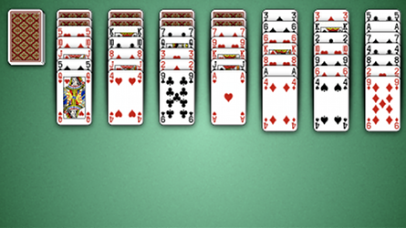
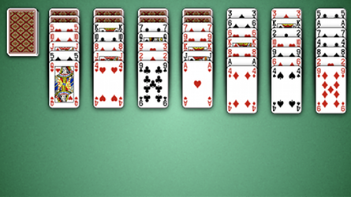

How to Play Scorpian
Game Setup
Stock: The stock is the pile of face down cards in the top left corner of the board. When the player
clicks on the stock, a card is dealt face up to to each of the first 3 tableau.
Tableau: The tableau are the 7 piles of cards stacked along the top of the table next to the stock.

Tableau: The tableau are the 7 piles of cards stacked along the top of the table next to the stock.

Rules
The game starts with 49 cards dealt into seven columns in the tableau.
The first four columns each have three face-down cards and four face-up cards.
The object of the game is to form four columns of same-suit, in-sequence cards from king down to ace.
Cards in the tableau are built down by suit and every face up card is available for play, even of the cards
on top of it are not ordered. So for example, in the image above we can move the Jack of Hearts (2nd column)
onto the Queen of Hearts (1st column). Similarly, we may move the 3 of Diamonds (bottom of 6th column) onto
the 4 of Diamonds (5th column).
If a tableau is empty, it may be filled with a King.
If a tableau is empty, it may be filled with a King.